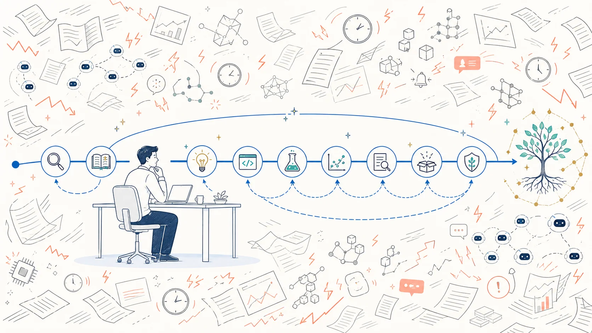
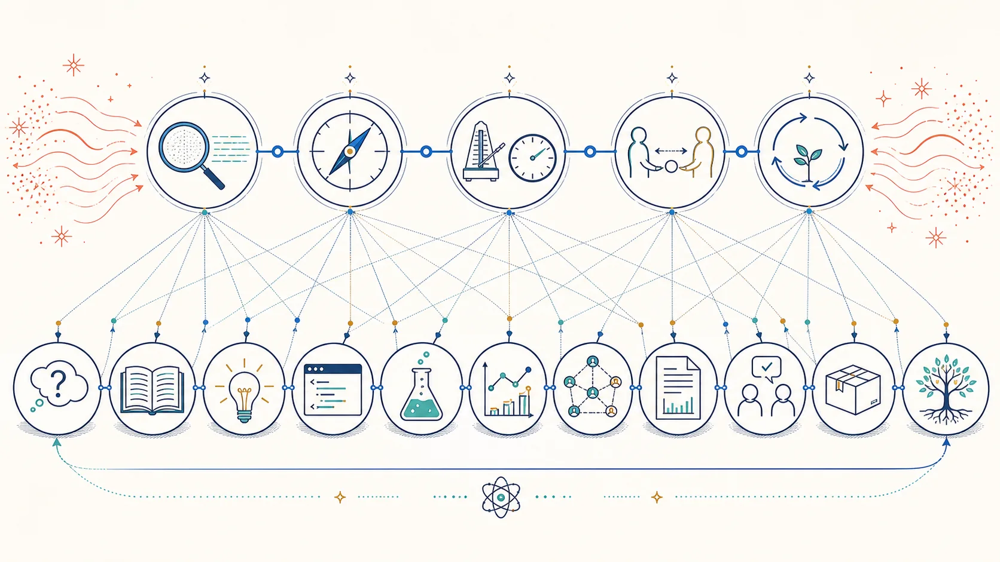
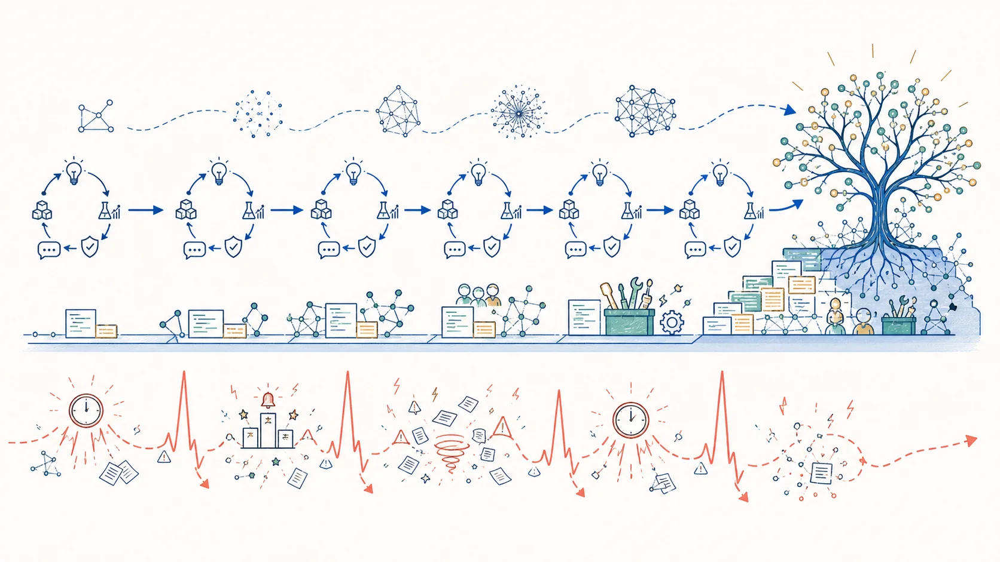

Research Notes
All views expressed here are my own.
Research Practice / Sustainable Performance
The Calm Control Plane: A Durable Edge in Competitive AI Research
AI is making code, experiments, and papers faster. The scarce advantage is increasingly the ability to preserve judgment, verification, responsibility, and recovery while the field accelerates.

Calm is not low velocity. It is low distortion under velocity.
The Field Is Accelerating, but the Bottleneck Has Moved
AI research now produces motion at a remarkable rate. New papers arrive faster than any person can read them. Coding agents can open several implementation branches while I am still understanding the first. Experiments, plots, related work, slide decks, and rebuttal drafts can all be generated in parallel. A new model release can reorganize a week's priorities before lunch. The visible advantage seems obvious: move faster, run more, submit more, react sooner.
But when production becomes abundant, the bottleneck moves. The scarce work shifts toward choosing the right question, filtering signal from noise, designing a discriminating test, noticing when a result is too convenient, integrating many partial outputs, and accepting responsibility for the final claim. AI can multiply possible actions faster than it multiplies the human capacity to inspect them. A system with a very fast data plane and a weak control plane does not become intelligent. It becomes turbulent.
This is why I think calm will become a serious competitive advantage in AI research. I do not mean that the person with the lowest heart rate will always win, or that temperament matters more than compute, mentorship, health, institutional position, timing, and luck. The literature does not directly show that “calm researchers win.” A more defensible claim is narrower: acute stress can impair working memory and cognitive flexibility; time pressure can trade software quality for short-term productivity; and team conditions affect whether interpersonal risk suppresses learning. My further hypothesis is that researchers and teams that regulate these failure modes will make fewer compounding errors, recover faster, earn more trust, and preserve more capability across repeated cycles.
A meta-analysis of acute stress and executive function found average impairments in working memory and cognitive flexibility, with important variation across tasks and conditions. This does not map neatly onto an AI lab, but the mechanism is recognizable. The moment I most need to hold several hypotheses in mind, abandon a failing approach, or notice a hidden confound is also the moment when pressure can narrow the search. Calm is therefore not mainly an emotion. It is protection for decision quality.
Calm Is a Property of the Control System
The advantage is not feeling less. It is allowing less distortion to enter the decision.
A researcher can feel anxious and still follow a calm process. A team can move urgently and remain operationally calm because roles, evidence standards, and escalation paths are clear. An outwardly relaxed lab can be epistemically careless. The useful definition is functional: calm is the capacity to preserve accurate perception, explicit objectives, appropriate tempo, accountable ownership, and recovery as speed, uncertainty, stakes, and social pressure rise.
I use calm here as a design term, not as a validated psychological scale. Individual composure, process stability, team psychological safety, and institutional capacity are distinct mechanisms. The word names their shared objective—preserving judgment under pressure—without claiming that they are the same construct or that one automatically produces the others.
Calm does not mean moving slowly, waiting for certainty, avoiding competition, suppressing emotion, or being agreeable. It does not mean that deadlines are imaginary or that opportunity cost disappears. It means that urgency does not get to silently rewrite the goal, the evidence standard, or the assignment of responsibility.
- Signal
- What actually changed in the evidence, distinct from interpretation, competitor activity, prestige, and emotional contagion?
- Objective
- Which question, quality invariant, or user need remains stable while methods and tactics adapt?
- Tempo
- Which actions are reversible enough to move quickly, and which commitments require distance, evidence, or independent review?
- Ownership
- Who understands the path, makes the decision, verifies the result, and bears responsibility for the claim?
- Recovery
- How does the person or team absorb failure, correct the system, and return without allowing one cycle to corrupt the next?
Observe → Separate signal from pressure → Reconfirm objective → Assign ownership and tempo → Act → Verify → Recover
These variables form a research control plane. The data plane executes: literature retrieval, code, experiments, agents, plots, manuscripts, and releases. The control plane decides what deserves attention, what may run, what counts as evidence, when to stop, who owns the inference, and how to respond when something breaks. AI rapidly expands the first plane. The competitive question is whether the second one can keep up.
The control plane need not be one person or a centralized authority. In a complex research system, it should be distributed across accountable owners, independent checks, protected dissent, and escalation paths. Centralized control can be fast, but it also creates one place where overconfidence can propagate.

Why Calm Compounds Under Competition
Competitive fields magnify small differences. A slightly better question leads to more informative experiments. A cleaner pipeline makes each later run cheaper. An honest limitation can make the next claim easier to trust. A good postmortem is intended to reduce recurrence by identifying systemic causes and corrective actions. Calm matters because it protects these compounding transitions.
Selection & options
- Distinguish an important question from a visible one
- Use small reversible probes before expensive commitments
- Preserve non-consensus paths while the field converges
Error containment
- Stop a contaminated split before it becomes a headline claim
- Keep exploration from masquerading as confirmation
- Narrow the inference before lowering the evidence standard
Trust
- Make claims that survive inspection after the presentation ends
- Correct errors without evasion or identity defense
- Become a collaborator to whom bad news can travel early
Number of cycles
- Learn from failure without carrying panic into the next project
- Preserve health, curiosity, and deep technical craft
- Remain adaptable when models, benchmarks, and institutions change
My current principle: speed helps within a cycle; recovery helps determine how many cycles I get.
Calm can also make work more distinctive. In a rush, many researchers consume the same feeds, imitate the same framing, test the same benchmark, and optimize for the same deadline. Their speed produces convergence. A researcher who can tolerate a little distance may notice the assumption everyone inherited, the negative result no one integrated, or the engineering constraint that reveals whether a fashionable method survives operational conditions. Standing out is often less about adding more noise than maintaining an independent signal.

The Calm Control Plane Across the Research Lifecycle
Calm becomes useful when it changes action. At every stage, I want to identify the characteristic pressure distortion, install a small control before that pressure peaks, and leave a persistent artifact that makes the next decision easier to inspect.
The manifestation depends on the contribution. Theory needs explicit assumptions, proof obligations, and adversarial counterexamples; datasets and benchmarks need lineage, consent, split integrity, and construct validity; systems need operational conditions, failure modes, total cost, and rollback; empirical methods need fair baselines, seeds, boundary conditions, and confirmatory tests; audits and replications need independent coverage, negative evidence, and careful disclosure. The control principle is shared even when the evidence object is not.
Choose What Deserves Attention
Agenda and Problem Selection
The researcher who reacts to every alert eventually works on other people's clocks.
Competition creates trend contagion. A competitor posts a result, a model release changes the conversation, or a benchmark suddenly attracts attention; the agenda pivots before anyone asks whether the underlying uncertainty changed. Calm does not ignore the frontier. It asks for an explicit reason to enter: unique access, a conceptual angle, transferable capability, an unresolved contradiction, or a real user need.
I want an agenda memo that survives beyond a browser session: the question, why it matters now, what could remain durable, what advantage I can bring, and what evidence would make me leave. A portfolio should reserve some capacity for non-consensus bets. Otherwise the field's attention becomes my objective function before I have chosen one.
Literature and Frontier Tracking
Reading more is not the same as updating well.
A frantic literature process counts papers. A calm one maps claims, assumptions, contradictions, and missing tests. I want to distinguish an established result from a contested interpretation, an open question, and speculation repeated through citation chains. One prominent preprint may deserve immediate reading; it rarely deserves immediate surrender of an entire agenda before its scope and evidence are checked.
The persistent artifact is a living claim-and-disagreement map. It records which primary source supports each belief, what would overturn it, and what genuinely changed after the latest release. This turns frontier tracking from ambient anxiety into structured updating.
Turn Uncertainty Into Evidence
Experimental Design and Interpretation
The fastest team can start the most experiments. The calmer team is more likely to know which result deserves belief.
Surprising results exert pressure. A favorable number invites a causal story; the mechanism invites a story; the story determines which ablation suddenly looks necessary. Calm inserts distance before this chain hardens. For consequential runs, I want a prediction, decision rule, and plausible alternative explanation recorded in advance. Exploratory and confirmatory phases should remain visibly distinct, and an unusually favorable result should trigger an independent rerun rather than immediate celebration.
This is the useful logic behind preregistration and transparent analytical plans: they do not make a design good or prohibit learning-driven change, but they make outcome-independent choices and later deviations easier to see. The persistent artifact is an experiment ledger linking prediction, configuration, result, interpretation, and belief update—including failed runs and abandoned explanations.
Honesty and provenance are non-negotiable, but assurance should scale with claim breadth, stakes, resource cost, and reversibility. A resource-constrained team can narrow a claim, choose a cheaper discriminating test, share verification infrastructure, or publish a clearly exploratory result. It should not simulate certainty that the available evidence cannot support. Independence is also graded: a new seed is weaker than a separate implementation, evaluator, dataset, or model family.
Research Engineering and Debugging
In research engineering, calm often looks like boring infrastructure built before it becomes urgent.
Time pressure can create real short-term throughput, but a systematic review of time pressure in software engineering found that higher-quality studies more often reported a trade-off: productivity rose while software quality fell. The evidence is heterogeneous and not a law, but it describes a familiar failure mode. Several unlogged fixes land together, the pipeline works once, and technical debt is counted as research velocity.
A calm engineering loop establishes a minimal reproducible path early, adds observability and checkpoints, bounds work in progress, tracks cost, and keeps rollback possible. During an incident, one coordinator maintains the shared state. My debugging preference is to change one suspected causal factor at a time, so each observation remains interpretable. Google's incident-management guidance is useful here: it emphasizes preparation, defined roles, coordination, communication, documentation, and learning from incidents—the kind of structure that supports fast response without improvised chaos. The artifact is a reproducible pipeline plus a decision and incident log—not a heroic memory of how the final run was rescued. Current NIST incident-response guidance likewise treats preparation, defined responsibilities, communication, and recovery as a continuous lifecycle.
Scale Execution Without Scaling Confusion
Coding and Research Agents
An agent can inherit a task. It cannot inherit accountability.
Agents make launching concurrent tasks cheap. That is valuable until open branches exceed the team's verification capacity. At that point, activity rises while understanding fragments. Plausible outputs receive shallow review, agent agreement is mistaken for independence, and no one owns the complete path from prompt and data to result and claim.
Calm orchestration begins with a task contract: objective, scope, invariants, stop conditions, required evidence, and output format. Proposer and verifier roles should be separated where possible. Important agent results remain quarantined until independently checked. Prompts, tool calls, data versions, and artifacts retain provenance. Most importantly, a human claim owner can explain why the evidence warrants the conclusion. The number of concurrent agents should be capped by how much output the team can actually inspect.
I expect this bottleneck to sharpen when every lab can launch a parallel research factory. A team cannot parallelize its way out of a verification bottleneck; it can only create a larger unverified queue. Two agents can be role-separated without being epistemically independent if they inherit the same model family, data, tools, and framing. Autonomous benchmark exploitation, test-set contamination, and machine-generated papers meeting machine-assisted reviews may then produce correlated blind spots at scale. Provenance, heterogeneous checks, and interfaces that make evidence easy to inspect will differentiate more than raw branch count.
Task contract → Bounded execution → Independent check → Human claim owner
Collaboration and Lab Culture
A calm team is not a quiet team. It disagrees early enough to avoid panicking late.
Emotional contagion, deference, and diffuse responsibility become expensive near a deadline. Junior researchers may see the problem first yet speak later. A senior author's visible panic can make bad news feel costlier, so it may arrive after options have narrowed. Calm leadership does not lower standards; it makes errors, dissent, and uncertainty reportable while they remain actionable.
Research on psychological safety, including Edmondson's field study of team learning behavior and a large meta-analytic review, supports the importance of environments where interpersonal risk does not suppress learning, although much of the evidence is correlational and psychological safety is not comfort or immunity from accountability. The practical controls are concrete: name decision, implementation, evaluation, artifact, and claim owners; authorize a skeptic before consensus forms; create an escalation route that junior members can use without retaliation and that can bypass the immediate chain of command; and make status visible without manufacturing constant urgency. The artifact is an ownership map and versioned decision record.
Meet the Deadline Without Losing the Work
Writing and Submission
A deadline should compress scope before it compresses standards.
Near submission, motion is seductive. Another ablation, another paragraph, another generated figure, and another framing change can each feel like progress. Yet last-minute accumulation often reduces the coherence that the extra work was meant to create. The dangerous move is to shrink the evidence while expanding the claim so the story still feels competitive.
I want separate evidence, scope, artifact, and packaging gates. The minimum defensible submission is not the paper with the most content; it is the one whose central claim, evidence path, limitations, and artifact can be owned. Construct the claim–evidence map before optimizing the narrative. Write the limitations before the final abstract. When time contracts, cut breadth before rigor. Missing one deadline may be costly, but it is different from converting a temporary opportunity into hard-to-reverse integrity debt.
Venue Choice, Review, and Rebuttal
A rebuttal is an update to the shared scientific record, not a trial of the researcher's worth.
Venue choice should include audience, contribution type, review format, timing, and fit—not prestige alone. After reviews arrive, calm creates a small separation between the event and the response. Each comment can be classified as a factual error, missing evidence, misunderstanding, preference, scope disagreement, or probable noise. That decomposition is more useful than arguing with an overall score.
Rebuttals should answer issues by decision relevance. A new experiment is worth running when it discriminates between explanations, not merely when it creates another favorable cell. If the reviewer found a real weakness, change the claim without treating revision as defeat. If the review misunderstood the work, improve the manuscript or argument rather than attack the reader. Calm preserves the possibility that feedback can be both uncomfortable and useful.
Become Legible, Then Stay Responsible
Presentation and Public Communication
In a crowded field, trust becomes a distribution channel.
Presentation should increase legibility without changing truth conditions. Social-media compression and conference storytelling reward confidence, but durable communication separates observed result, interpretation, uncertainty, and next test. I find direct answers more useful than defensive fluency. Visible corrections can strengthen credibility because they show that the author is optimizing the record rather than protecting a pose.
As polished prose and attractive visuals become easier to generate, understated precision may stand out more. People remember the researcher whose artifact runs, whose limitation is accurate, whose talk makes the mechanism clearer, and whose answer remains stable after the applause.
Publication, Maintenance, and Career
Publication ends a submission cycle; it does not end responsibility for the work.
Calm continues after the decision. Artifacts need versions and a correction path. Claims should be revisited after community use, failed replications, and model changes. Maintenance is often invisible, but it converts a paper from a moment into research capital. A portfolio should balance near-term delivery, compounding infrastructure, and high-variance exploration so that no single review cycle owns the researcher's identity.
Lasting does not mean remaining unchanged; it means changing methods without losing ownership of judgment. I want to separate invariant skills— problem formulation, experimental reasoning, debugging, systems thinking, communication, and mentorship—from tools whose value may decay quickly. Delegation should increase what I can do without hollowing out what I can understand. Career optionality also includes relationships, financial and institutional room to move, succession for maintained artifacts, and the ability to leave a topic, collaboration, or environment that no longer supports serious work.
Sustainability is not separate from technical quality. A large meta-analysis of job demands, burnout, engagement, and safety outcomes found burnout and engagement associated with workplace safety outcomes across industries. The evidence is mostly observational and cannot prove that rest alone improves AI research. It does support a systems view: overload, burnout, and safety-relevant behavior are connected rather than independent. I therefore treat recovery time as a design principle for protecting continuity, skill ownership, and the ability to return for another difficult question.
Steelman Urgency: Calm Can Move Very Fast
A serious account of calm must reject the false choice between composure and speed. Some situations are genuinely urgent: a privacy or data-integrity incident is active, a security vulnerability is exposed, compute access is expiring, a rapidly decaying opportunity can resolve a major uncertainty, or further delay has low expected information value relative to its cost. Delay can be the irresponsible choice.
Tempo rule: move quickly when an action is reversible, observable, and bounded in blast radius. Raise assurance with uncertainty, consequence, and irreversibility. When an action is both urgent and hard to reverse, escalate quickly and add an independent check.
Reversibility alone is not enough. A rollback can restore code but cannot recall leaked private data, refund all compute, un-contaminate an evaluation, or undo a public accusation. Releases, authorship commitments, expensive resource allocations, and broad scientific claims deserve controls proportional to their external consequences and observability.
Reversible
- Urgent: act quickly and record the action
- Not urgent: batch, prototype, or test cheaply
- Prefer small probes that preserve later options
Hard to reverse
- Urgent: escalate and add a second owner or check
- Not urgent: deliberate, red-team, and document
- Raise assurance with the consequence of error
Calm action can look extremely fast because preparation removed negotiation from the crisis. The incident roles already exist. The rollback path is tested. The claim boundary is known. The team does not need to invent governance while the system is failing. Panic also moves fast, but its direction has not been chosen.
When “Calm” Becomes Harmful
Calm is a capacity, not a virtue badge.
Calm becomes harmful when it is avoidance, procrastination, indifference, or underreaction to a real safety, integrity, harassment, credit, or authorship problem. It becomes harmful when emotional suppression hides accumulating burnout, when courtesy is valued more than dissent, or when a senior researcher uses “be calm” to tone-police someone who is correctly alarmed. Fear and anger can contain accurate information. The content deserves evaluation even when its delivery is uncomfortable.
Calm is also unequally available. A tenured principal investigator and an international student do not bear the same cost for postponing a paper, challenging a claim, or refusing a deadline ritual. What appears to be personal composure may partly reflect money, health, immigration security, compute access, mentorship, or institutional protection. Telling precarious researchers to become calmer can individualize a problem that people with more power should fix.
The institutional duties are therefore part of the control plane: predictable expectations, fair credit, protected dissent, resource buffers, no-retaliation escalation, recovery after deadline periods, and explicit ownership of quality decisions. The goal is not a culture that never feels pressure. It is a culture that prevents pressure from becoming invisible coercion or corrupted evidence.
- Do not confuse calm with silence; raise an integrity or safety issue early.
- Do not use patience to excuse a decision that only a senior person can safely change.
- Do not romanticize endurance inside a system that consumes people faster than it learns.
- Do not let “thoughtfulness” become perfectionism that indefinitely avoids contact with evidence.
- Do not suppress emotion; translate it into an observable risk, need, or decision.
Build Calm Before It Is Needed
Composure is easier to demand than to produce. I do not want a personal system that relies on heroic self-control at the worst moment. The more reliable design is to install small defaults while pressure is low, so that high-quality action becomes cheaper when pressure rises.
Personal control plane
- Begin the day with the highest-value tractable uncertainty, not the loudest feed
- Keep a bounded work-in-progress limit for projects and agent branches
- Record predictions, decisive results, deviations, and belief updates
- Pause before irreversible claims and replies that feel personally threatening
- Schedule recovery and deep technical practice as research capacity
Team control plane
- Name owners, escalation paths, evidence gates, and rollback routes early
- Make bad news cheap and authorize a skeptic before consensus
- Cap concurrency at verification capacity, not generation capacity
- Run blameless postmortems that still assign corrective actions
- Protect recovery after deadlines and incidents instead of normalizing heroics
I also want a brief weekly control-plane review: What actually changed my beliefs? Where did urgency alter a standard? Which branch has no owner? What bad news is becoming expensive to say? What should stop, not merely continue more efficiently? Which capability became internalized, and which output still exceeds my understanding? These questions keep calm connected to evidence rather than turning it into an aesthetic.
Who Wins, Who Stands Out, Who Lasts
“Winning” in research has several horizons. A researcher can win one cycle by shipping timely work whose evidence and artifact survive scrutiny. A researcher can stand out across cycles by developing recognizable judgment, coherent questions, reliable engineering, honest communication, and a reputation as a safe collaborator. A researcher lasts across regimes by preserving health, adaptability, skill ownership, intellectual independence, and the ability to recover when methods, benchmarks, and institutions change.
- Win a cycle
- Move decisively, finish the work, and communicate a claim whose evidence and artifact remain defensible after the deadline.
- Stand out
- Become recognizable for independent questions, calibrated judgment, reliable systems, useful disagreement, and claims that survive inspection.
- Last
- Preserve the craft, trust, curiosity, health, relationships, and recovery capacity needed to remain capable through many changes in the field.
The field may reward spectacle in a particular cycle. Durable reputation accrues more slowly to work that remains standing. As generated output becomes abundant, I expect the signal value of mere activity to decline. The person who can create motion will still matter; the person who can decide which motion deserves trust will matter more.
Excellent work can remain invisible, and visible work can remain fragile. Affiliation, resources, timing, networks, marketing, and luck still shape who is noticed. Calm does not make the field fair; it improves the probability that capability, evidence, and trust survive its noise.
If this thesis is right, the future will not belong simply to the researcher who can generate the most. It will belong disproportionately to researchers and teams whose control plane remains clear while generation accelerates: fast in execution, careful in commitment, direct in disagreement, calm in review, responsible after publication, and capable of returning for another difficult question.
Sources That Informed These Notes
- Grant S. Shields et al., “The Effects of Acute Stress on Core Executive Functions: A Meta-Analysis and Comparison with Cortisol” (2016).
- Miikka Kuutila, Mika Mäntylä, Umar Farooq, and Maëlick Claes, “Time Pressure in Software Engineering: A Systematic Review” (2020).
- M. Lance Frazier et al., “Psychological Safety: A Meta-Analytic Review and Extension” (2017).
- Amy C. Edmondson, “Psychological Safety and Learning Behavior in Work Teams” (1999).
- Tom E. Hardwicke and Eric-Jan Wagenmakers, “Reducing Bias, Increasing Transparency and Calibrating Confidence with Preregistration” (2023).
- Adam Crume et al., “Incident Management Guide” (Google Site Reliability Engineering, n.d.).
- Alex Nelson, Sanjay Rekhi, Murugiah Souppaya, and Karen Scarfone, “Incident Response Recommendations and Considerations for Cybersecurity Risk Management: A CSF 2.0 Community Profile” (NIST SP 800-61r3, 2025).
- Jennifer D. Nahrgang, Frederick P. Morgeson, and David A. Hofmann, “Safety at Work: A Meta-Analytic Investigation of the Link Between Job Demands, Job Resources, Burnout, Engagement, and Safety Outcomes” (2011).